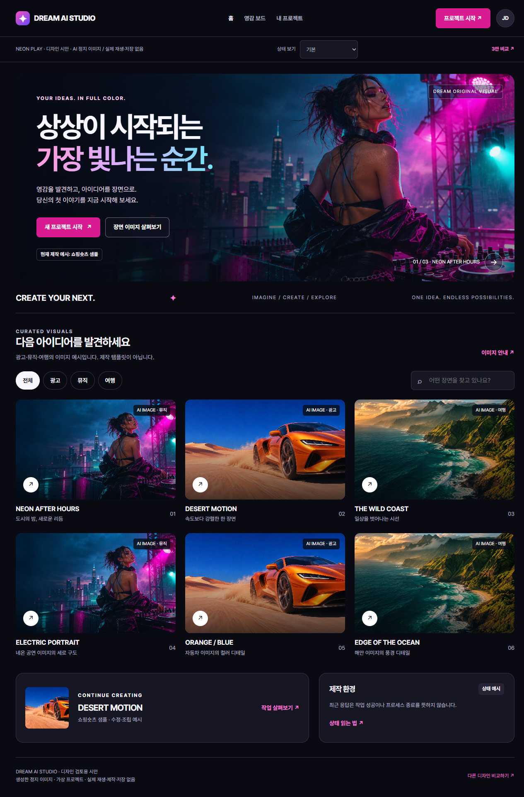
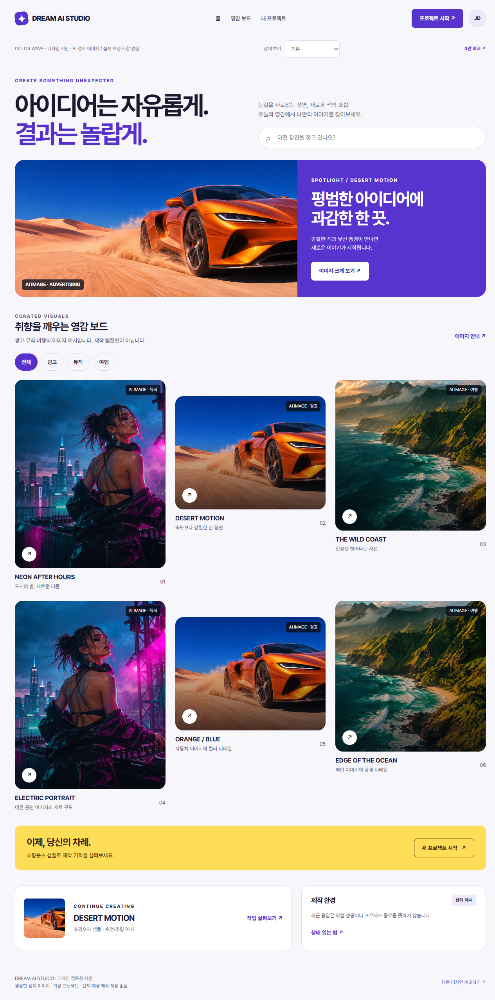
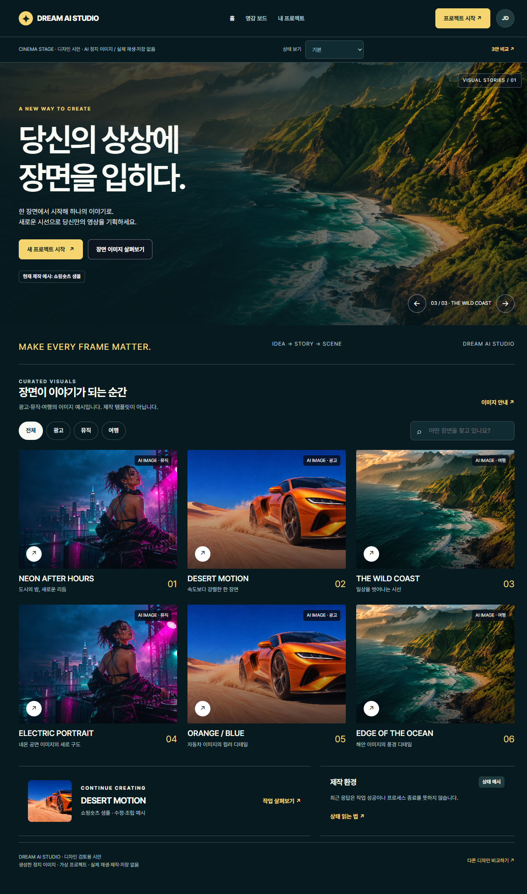

01 / 추천 · 스트리밍 플랫폼NEON PLAY블랙 바탕, 네온 컬러, 대형 미디어 히어로. 영감 탐색과 작업 이어하기가 자연스럽게 연결되는 가장 균형 잡힌 안입니다.시안 체험하기 ↗
02 / 밝고 감각적인 탐색 갤러리COLOR WAVE화이트 공간에 오렌지와 퍼플의 대비. 검색 중심 인트로와 높이가 다른 이미지 보드로 발견의 재미를 강조합니다.시안 체험하기 ↗
03 / 가장 몰입감 있는 쇼케이스CINEMA STAGE풀 블리드 풍경, 딥 틸과 골드, 여유로운 편집 구성. 브랜드의 영상미를 가장 크게 보여주는 프리미엄 방향입니다.시안 체험하기 ↗